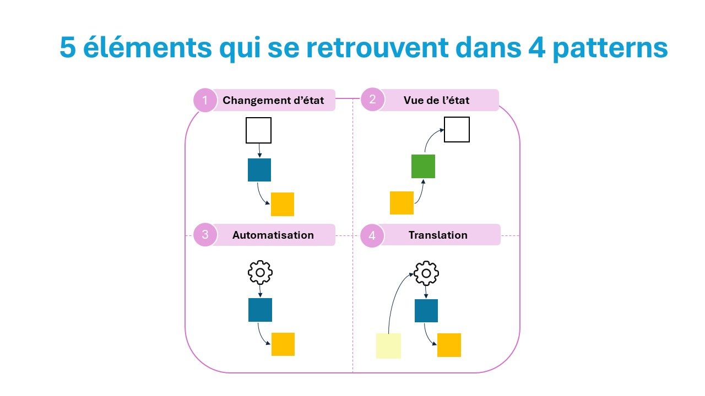
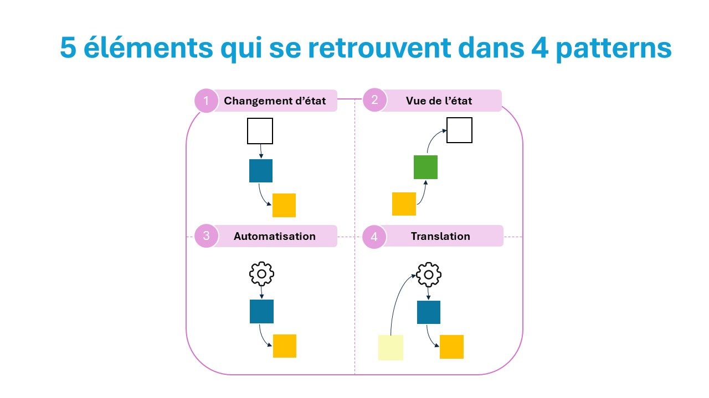
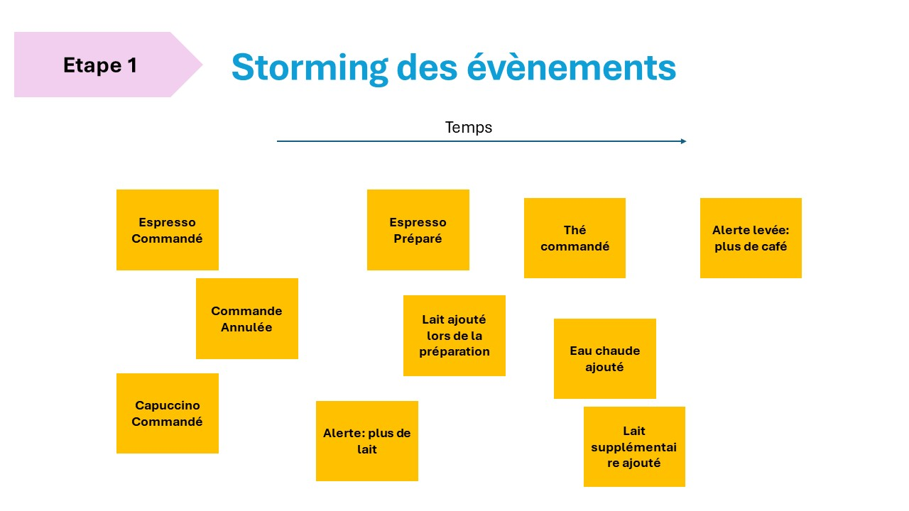

Comment animer une séance de faciliation d'Event Modeling: les 10 étapes du processus de modélisation

 


Modélisons une machine espresso semi-automated: bien que simple, on peut couvrir tous les patterns d'Event Modeling

Event Modeling: c'est d'abord la communication entre les métiers et les développeurs !

Avec tous les participants, nous essayons d'identifier les évènements: les faits, ce qui est arrivé dans le système vraiment. On utilise le "é(e)(s)" (-ed pour l'anglais) pour bien marqué que c'est du passé

Nous organisons les évènements selon la ligne de temps. Soyer léger: ne passer pas trop de temps.

Choississons un chapitre c'est à dire un processus, un workflow sans alternatives, de bout en bout. Tous les participants doivent se concentrer maintenant sur ce chapitre.

Changement d'état: c'est quand l'état du système change: un évènement, un fait, change l'état du système. Le changement d'état est initié par l'utilisateur

Pratiquons: pour nous, le changement d'état est initié par l'utilisateur qui veut un espresso. Remarquez que le sticker en bleu fait référence à l'espresso: "Commander" ou "Commander boisson" seraient trop génériques. Les mots sont super-importants.

Automatisation: le changement d'état est déclenchée par un automate, un processeur. Attention: l'automate ne prend pas de décision

Pratiquons: l'automatisation, c'est simplement un automate qui fait les espressos dès qu'ils sont commandés

Vue de l'état: l'automate ci-dessus ne fait que des espressos si l'état du système lui indique qu'il y a des commandes d'espresso à traiter. Donc c'est l'information nécessaire pour passer à l'étape suivante.

Pratiquon: l'automate a besoin de connaitre les espressos commandées pour les préparer. Dans notre cas, il y a un seul mais c'est juste dans notre exemple.

Pratiquons: indiquons à l'utilisateur quand son espresso est préparé
Pratiquons: quand une alerte est remontée, alors nous affichons l'état du système
Dernier pattern: traduction. Quand un évènement externe est reçu, nous le traduisons en un évènement interne. Le pattern porte son nom: c'est une traduction donc évitez d'ajouter de la logique métier autre que de la traduction

Pratiquons: on traduit un évènement "Alerte: plus de café" venant du distributeur de grains. Nous le traduisions en une alerte interne avec par exemple un code d'erreur. C'est extrêment utile, notamment si les alertes externed changent de format, il faut juste traduire le nouveau format.
Les agrégats et les couloirs: un agrégat est un ensemble de données qui ne peuvent vivre qu'ensemble. Votre nom, prénom, date de naissance et état civil permet de vous identifier: vous êtes un agrégat. Avec Event Modeling, il est plus facile de les identifier grâce aux évènements et langages utilisés

Pour les identifier, tracez des couloirs - "swimlanes" - et classer en fonction des langage utilisé, généralement par métier
Pratiquons: dans notre cas, il y a une notion d'espresso commandé et préparé. Il y a une notion différentes avec les alertes. Nous mettons les évènements externes dans leur(s) propre(s) couloir(s)

Identifions les slices: c'est l'étape la plus simple car nous avons construit le modèle avec les slices. Rappel: l'unité de mesure est la slice

Pratiquons: il suffit juste de repasser sur notre chapitre (processus, workflow)
Etape cruciale: les GWT, pour Given, When, Then (autrement appelé BDD tests). Il s'agit pour chaque slice, de spécifier les règles métier via des tests (le nom est égalemment connu sous Specification by Example")